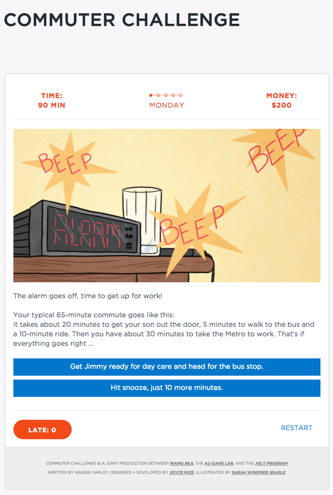
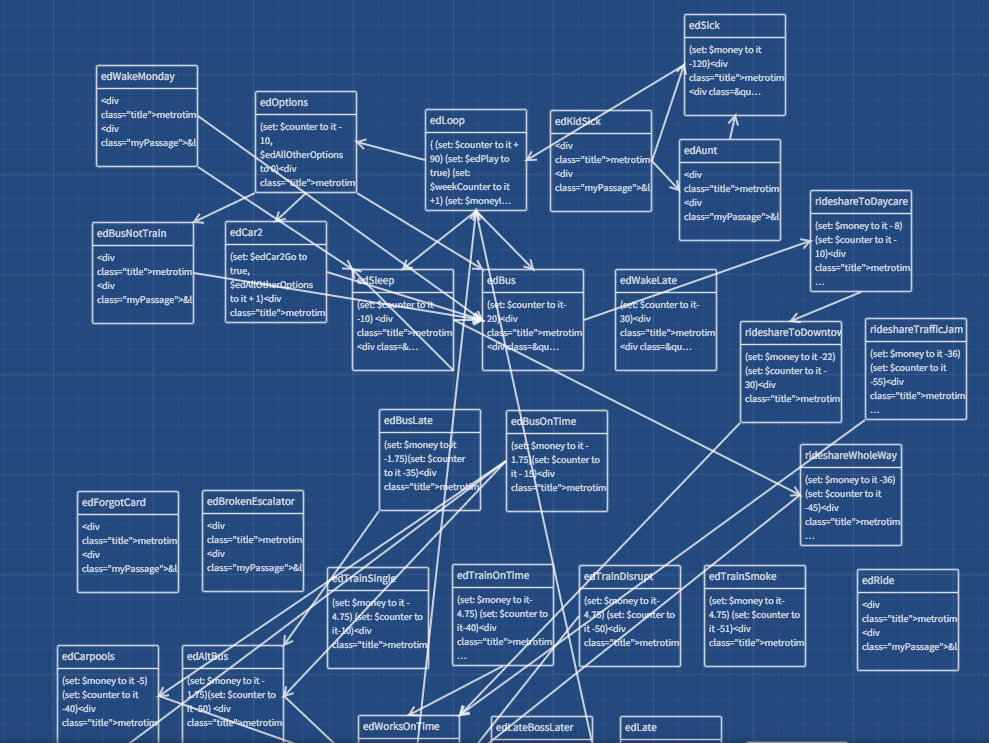

Commuter Challenge
Game designer 
Commuter Challenge is a short browser game developed in partnership with WAMU 88.5 in Washington D.C. during the Washington Metro Area Transit Authority's year-long, intensive SafeTrack initiative to update the Metrorail system. The goal of the project was to help players gain a better understanding of how service disruptions affect low-income workers travelling to jobs with unflexible employers
In Commuter Challenge, the player manages time and money during a work week as a kitchen staff person living in the suburbs and commuting to D.C. via Metrorail. The character is based on a composite of interviews conducted by Maggie Farley at Metrorail stations in the D.C. area. The game was designed by Maggie Farley and myself, and I developed the game in Twine using HTML and Twinescript (a language based on Javascript). The game was illustrated by Sarah Searle. It was published with WAMU 88.5 as a part of a trio of pieces on how SafeTrack affects D.C. residents and can be played here.
thanks!